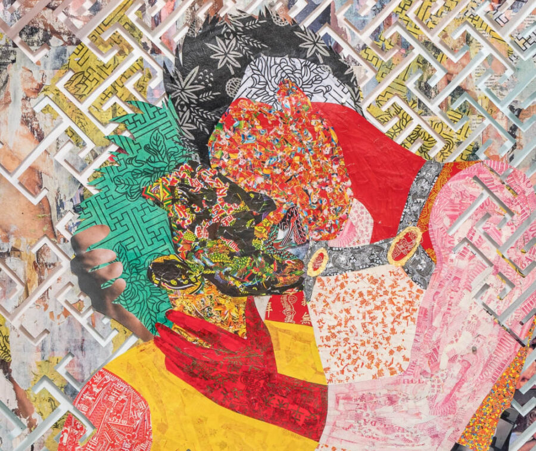

Antonius-Tín Bui: here, there is a different kind of sun
moniquemeloche is pleased to present here, there is a different kind of sun, a solo exhibition by Antonius-Tín Bui. Bui’s poly-disciplinary practice traces a lineage of hand-cut paper, community engagement, and spiritual inquiry rooted in queerness and diaspora to carve space for narratives too often omitted from dominant cultural histories. For their third solo exhibition at the gallery, Bui expands upon their hand-cut paper practice, incorporating cyanotype, air brushing, joss paper, scent, and sound to investigate themes of intimacy, ritual, grief, and transformation.
Upon entering the first gallery, visitors are greeted with a series of collage works on paper embedded with narratives of erotic resonance and sacred attentiveness. Visceral and colorful, these collages employ various techniques including cut paper, photo transfers of vintage and contemporary porn magazines, wax, and evidence of burning. Generated by collaged layers of joss paper (also called spirit money, ghost money, or ancestral paper), Bui’s figures depict the joys, desires, longings, and fantasies of Queer and Trans ancestors. Traditionally held within spiritual practices in China and broader East and Southeast Asia, joss paper is burned as an offering to the spirit world, providing care, resources, and comfort for the deceased in the afterlife. In burning their work, Bui honors the pleasure, satisfaction, and lust of an afterlife, especially for those who were denied access, autonomy, and freedom while on this planet. A small altar features custom incense sticks by multidisciplinary artist Hyungi Park, an olfactive welcome and a participatory invitation for viewers to burn the incense, situating oneself within a space of remembrance and attunement.
The second gallery invites viewers deeper into an ecosystem where human and non-human entities intermingle and evolve. Influenced by the artist’s recent journeys through Southeast Asia, science fiction imaginaries, collaborative exchanges, and personal rituals, Bui’s hand-cut paper works and cyanotypes evoke hybrid spirits, guardians, and beings of transformation. These larger-than-life figures bloom and metamorphose in shades of blue that echo the intimate exposures of the cyanotype process, their textures born from flora and fauna gathered on walks across New Haven, North Adams, Chicago, and beyond. Here, we see Bui’s intensive paper cutting process at its fullest, where delicate strands imitate the deep entanglements of memory and desire, our relationship to time and the land. In a cyclical process, Bui incorporates airbrushing to trace, layer, and echo the contours and negative spaces of each cut paper work, informing each other’s surfaces – a mycelial network of contact and transformation. Humming gently in the background is a mystical soundscape by MIZU, a New York-based cellist, composer, and experimental producer whose work crafts immersive auditory worlds, and who is an ongoing collaborator with Bui. Weaving overlapping plucked, bowed, and reverberant tones, the sonic landscape feels both intimate and otherworldly, akin to walking through a forest.
Taken together, here, there is a different kind of sun posits a vision grounded in care, memory, attunement, and transformation. By centering ritual, pleasure, and the more-than-human, Bui reimagines futures that are not built on extraction or erasure, but on remembrance and our collective vitality across various states of being.